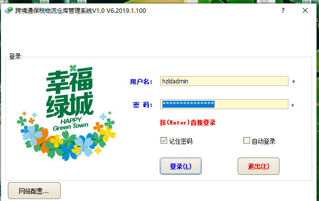
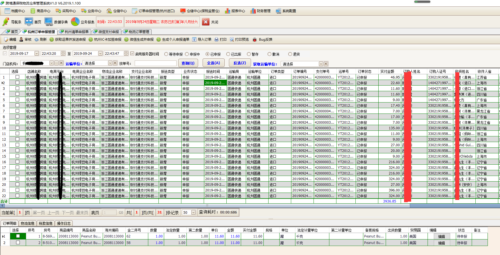
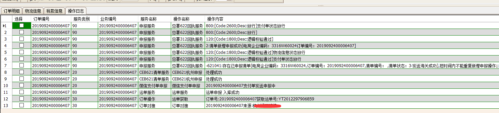

public class CEBSignClient
{
public void StartSignClient()
{
}
private static SignClientConfig _signClientConfig;
public static SignClientConfig CebSignClientConfig
{
get { return _signClientConfig; }
set { _signClientConfig = value; }
}
public static SignClientConfig GetCebSignClientConfig()
{
if (_signClientConfig == null)
{
_signClientConfig = new SignClientConfig();
}
return _signClientConfig;
}
public static void SetCebSignClientConfig(SignClientConfig CebSignClientConfig)
{
_signClientConfig = CebSignClientConfig;
}
/// <summary>
/// 处理报文加签服务64位
/// </summary>
/// <param name="CEBMessagesXml"></param>
/// <param name="FileName"></param>
/// <returns></returns>
public static string StartSignTransform(string CEBMessagesXml, string FileName, ref bool retunValue)
{
string StatusCode = string.Empty;
string StatusMessage = string.Empty;
retunValue = true;
SignHelper signHelper = new SignHelper();
GetCebSignClientConfig();
string centiNo = "";
signHelper.Password = CebSignClientConfig.SignPwd;
signHelper.MsgType = CebSignClientConfig.MsgType;
signHelper.ReceiverId = CebSignClientConfig.ReceiverId;
signHelper.SenderId = CebSignClientConfig.SenderId;
try
{
if (signHelper.IsICOrUKeyOk(out centiNo))
{
string text = CebSignClientConfig.ReceiveSignin;//接收文件夹
string text2 = CebSignClientConfig.SendIn;//发送文件夹
//改造
string text4;
try
{
signHelper.CopMsgId = Guid.NewGuid().ToString();
text4 = signHelper.SignInfo(CEBMessagesXml, centiNo);
//是否生成终端报文
if (CebSignClientConfig.CheckedTerminal)
{
text4 = signHelper.ShellInfo(text4);
}
}
catch (Exception ex)
{
//this.TransformException("文件" + text3 + "异常：" + ex.Message);
StatusMessage = ex.Message;
return StatusMessage;
}
//拼接目标文件夹和文件路径
//string path = Path.Combine(text2, Path.GetFileName(FileName));
var CEBMessage = SignHelper.FormatXml(text4);
StatusMessage = CEBMessage;
//File.WriteAllText(path, CEBMessage);
//File.Delete(FileName);
}
else
{
//this.TransformException("卡信息读取失败");
StatusMessage = "卡信息读取失败";
retunValue = false;
}
}
catch (Exception ex)
{
//this.TransformException(ex.Message);
StatusMessage = ex.Message;
retunValue = false;
}
return StatusMessage;
}
/// <summary>
/// 处理报文加签服务64位
/// </summary>
/// <param name="CEBMessagesXml"></param>
/// <param name="FileName"></param>
/// <returns></returns>
public static string StartSignTransform(string CEBMessagesXml, ref bool retunValue)
{
string StatusCode = string.Empty;
string StatusMessage = string.Empty;
retunValue = true;
SignHelper signHelper = new SignHelper();
GetCebSignClientConfig();
string centiNo = "";
signHelper.Password = CebSignClientConfig.SignPwd;
signHelper.MsgType = CebSignClientConfig.MsgType;
signHelper.ReceiverId = CebSignClientConfig.ReceiverId;
signHelper.SenderId = CebSignClientConfig.SenderId;
try
{
if (signHelper.IsICOrUKeyOk(out centiNo))
{
string text = CebSignClientConfig.ReceiveSignin;//接收文件夹
string text2 = CebSignClientConfig.SendIn;//发送文件夹
//改造
string text4;
try
{
signHelper.CopMsgId = Guid.NewGuid().ToString();
text4 = signHelper.SignInfo(CEBMessagesXml, centiNo);
//是否生成终端报文
if (CebSignClientConfig.CheckedTerminal)
{
text4 = signHelper.ShellInfo(text4);
}
}
catch (Exception ex)
{
//this.TransformException("文件" + text3 + "异常：" + ex.Message);
StatusMessage = ex.Message;
return StatusMessage;
}
//拼接目标文件夹和文件路径
//string path = Path.Combine(text2, Path.GetFileName(FileName));
var CEBMessage = SignHelper.FormatXml(text4);
StatusMessage = CEBMessage;
//File.WriteAllText(path, CEBMessage);
//File.Delete(FileName);
}
else
{
//this.TransformException("卡信息读取失败");
StatusMessage = "卡信息读取失败";
retunValue = false;
}
}
catch (Exception ex)
{
//this.TransformException(ex.Message);
StatusMessage = ex.Message;
retunValue = false;
}
return StatusMessage;
}
}
public class SignClientConfig
{
public SignClientConfig()
{
SignPwd = "88888888";
ReceiveSignin = @"D:\跨境通\CustomsDeclarationWebMvcWMS3.5\DotNet.WinForm\bin\Debug\EportExchange\signin";
SendIn = @"D:\跨境通\CustomsDeclarationWebMvcWMS3.5\DotNet.WinForm\bin\Debug\EportExchange\in";
CheckedTerminal = false;
MsgType = "";
ReceiverId = "";
SenderId = "";
}
/// <summary>
/// 密码
/// </summary>
public string SignPwd { get; set; }
/// <summary>
/// 加签后的文件夹 接收文件夹
/// </summary>
public string ReceiveSignin { get; set; }
/// <summary>
/// 待加签文件夹 发送文件夹
/// </summary>
public string SendIn { get; set; }
/// <summary>
/// 消息类型
/// </summary>
public string MsgType { get; set; }
/// <summary>
/// 接收Id
/// </summary>
public string ReceiverId { get; set; }
/// <summary>
/// 发送Id
/// </summary>
public string SenderId { get; set; }
/// <summary>
/// 是否生成终端报文
/// </summary>
public bool CheckedTerminal { get; set; }
}
//杭州版报文组装 //报文组装 按多条订单批量发送
foreach (KcyCeb311messageorderheadEntity item in Ceb311messageList)
{
progress.SetProgressValue(1);
if (string.IsNullOrWhiteSpace(item.Waybills))
{
StatusMessage = "发现订单运单不存在!";
return;
}
//每条订单不同的GUID
Ceb311HZSendmodel.Guid = CEBHelpUtilities.GetGuid();
CEB311MessageOrderSendModel Sendmodel = new CEB311MessageOrderSendModel();
Sendmodel.Ceb311OrderheadInfo = item;//主体信息
Condition = new SearchCondition();
SqlCondition = string.Empty;
Condition.AddCondition(KcyCeb311messageorderlistEntity.FieldOrderheadid, item.Orderheadid, SqlOperator.Equal)//
.AddCondition(KcyCeb311messageorderlistEntity.FieldCompanyid, UserInfo.CompanyId, SqlOperator.Equal)
.AddCondition(KcyCeb311messageorderlistEntity.FieldDeletionStateCode, 0, SqlOperator.Equal)//删除状态
.AddCondition(KcyCeb311messageorderlistEntity.FieldEnabled, 1, SqlOperator.Equal);//有效的
SqlCondition = Condition.BuildConditionSql(DatabaseType.SQLServer);
List<KcyCeb311messageorderlistEntity> ceb311messageorderlist = new List<KcyCeb311messageorderlistEntity>();
ceb311messageorderlist = new KcyCeb311messageorderlistManager().GetList<KcyCeb311messageorderlistEntity>(SqlCondition);
Sendmodel.Ceb311OrderDateilList = ceb311messageorderlist;//明细信息
Ceb311HZSendmodel.CEB311MessageHZSendList.Add(Sendmodel);
bool returnValue = true;
//报文校验
returnValue = HZCEB311Message.CheckCEB311Message(Ceb311HZSendmodel, out StatusCode, out StatusMessage);
if (!returnValue)
{
// 消息提醒
LoadingUtil.ShowInformationMessage(StatusMessage, AppMessage.MSG0000);
return;
}
if (StatusCode.Equals("IsStockQty"))
{
}
StatusMessage = "杭州报文发送";
progress.SetProgressValue(10);
progress.SetStatusInfo.Text = string.Format("操作{0}：{1}条 " + "错误:{2} 条", StatusMessage, itemCount, itemErrcount);
progress.SetStatusInfo.Update();
//生成杭州版报文
string CEB311MessageXml = HZCEB311Message.GetCareateHZOrderXml(Ceb311HZSendmodel);
Ceb311HZSendmodel.CebSoapOrdersXml = CEB311MessageXml;//原始报文
Ceb311HZSendmodel.SendOrdersXml = CEB311MessageXml;//杭州版报文
//报文加密私钥
Ceb311HZSendmodel.Secretkey = Ceb311HZSendmodel.Ceb311StoresorderdeclareparameterInfo.Aessign;//AES
Ceb311HZSendmodel.Privatekey = Ceb311HZSendmodel.Ceb311StoresorderdeclareparameterInfo.Privatekey.Trim();
Ceb311HZSendmodel.SendUrl = Ceb311HZSendmodel.Ceb311StoresorderdeclareparameterInfo.Declareaddress;//订单申报地址
//AES加密
Ceb311HZSendmodel.SendOrdersXml = KuangBaseAESUtil.Encrypt(Ceb311HZSendmodel.SendOrdersXml, Ceb311HZSendmodel.Secretkey);
CEBMessageHZJkfSignModel.Sign(ref Ceb311HZSendmodel);
if (!Ceb311HZSendmodel.Status)
{
// 消息提醒
LoadingUtil.ShowInformationMessage(Ceb311HZSendmodel.StatusMessage, AppMessage.MSG0000);
return;
}
Ceb311HZSendmodel.SendOrdersXml = HzOperationHttp.DataSoap(Ceb311HZSendmodel.SendOrdersXml, Ceb311HZSendmodel.BusinessType, Ceb311HZSendmodel.DataDigest, Ceb311HZSendmodel.CompanyCode);
Ceb311HZSendmodel.ResponseOrdersXml = HzOperationHttp.HttpPost(Ceb311HZSendmodel);
if (Ceb311HZSendmodel.Status)
{
StatusMessage = "处理回执消息";
progress.SetProgressValue(10);
progress.SetStatusInfo.Text = string.Format("操作{0}：{1}条 " + "错误:{2} 条", StatusMessage, itemCount, itemErrcount);
progress.SetStatusInfo.Update();
//读取返回消息处理状态
HZJKFOrderResultModel ResponseOrdersResultModel = new HZJKFOrderResultModel();
//处理返回的Xml报文
ResponseOrdersResultModel.DeccontentXml = JKFMessageXmlOperation.ReadReturnXml(Ceb311HZSendmodel.ResponseOrdersXml.Trim());
List<BaseJKFOrderMessageModel> ListbaseJKFMessageModel = JKFMessageXmlOperation.ReadJkfResultMessage(ResponseOrdersResultModel);
foreach (var Jkfitem in ListbaseJKFMessageModel)
{
Jkfitem.JKFCustomsorderlogInfo.Orderno = Jkfitem.JkfResultInfo.BusinessNo;
Jkfitem.JKFCustomsorderlogInfo.Servicename = "CEB311订单服务";
Jkfitem.JKFCustomsorderlogInfo.Operationname = "CEB311杭州申报";
Jkfitem.JKFCustomsorderlogInfo.CreateUserId = UserInfo.Id;
Jkfitem.JKFCustomsorderlogInfo.CreateBy = UserInfo.RealName;
Jkfitem.JKFCustomsorderlogInfo.Operation = UserInfo.UserName;
Jkfitem.JKFCustomsorderlogInfo.Companyid = UserInfo.CompanyId;
}
bool returnLogValue = HZJKFOrderResultService.AddJKFResponseResult(ListbaseJKFMessageModel);
}
//发送成功，再发送总署报文
if (Ceb311HZSendmodel.Status)
{
StatusMessage = "进行总署加签";
progress.SetStatusInfo.Text = string.Format("操作{0}：{1}条 " + "错误:{2} 条", StatusMessage, itemCount, itemErrcount);
progress.SetProgressValue(50);
progress.SetStatusInfo.Update();
//总署版报文生成 //生成报文 本地加签
Ceb311HZSendmodel = HZCEB311Message.GetSendSignatureCEB311Message(Ceb311HZSendmodel);
//生成报文 本地加签
bool retunValue = true;
string FileName = "CEB311_ZONGSHU_" + Ceb311HZSendmodel.Guid + ".xml";
//是否生成终端报文
SignClientConfig signClientConfig = CEBSignClient.GetCebSignClientConfig();
signClientConfig.CheckedTerminal = true;
signClientConfig.SignPwd = Ceb311HZSendmodel.CebBasetransferInfo.Note;// "88888888";
signClientConfig.SenderId = Ceb311HZSendmodel.DXPId;
signClientConfig.ReceiverId = Ceb311HZSendmodel.ReceiverId;
signClientConfig.MsgType = Ceb311HZSendmodel.MessageType;
CEBSignClient.SetCebSignClientConfig(signClientConfig);
//进行签名
Ceb311HZSendmodel.CEBDeclareServiceXml = CEBSignClient.StartSignTransform(Ceb311HZSendmodel.SendOrdersXml, FileName, ref retunValue);
if (!retunValue)
{
StatusMessage = Ceb311HZSendmodel.CEBDeclareServiceXml;
//消息提醒
//LoadingUtil.ShowInformationMessage(StatusMessage, AppMessage.MSG0000);
return;
}
else
{
StatusMessage = "加签完成";
progress.SetStatusInfo.Text = string.Format("操作{0}：{1}条 " + "错误:{2} 条", StatusMessage, itemCount, itemErrcount);
progress.SetProgressValue(50);
progress.SetStatusInfo.Update();
Ceb311HZSendmodel.EportExchangePath = AppDomain.CurrentDomain.BaseDirectory + @"\EportExchange\in";
string path = Path.Combine(Ceb311HZSendmodel.EportExchangePath, FileName);
File.WriteAllText(path, Ceb311HZSendmodel.CEBDeclareServiceXml);
}
//包装总署发送报文 包装SAOP格式发送
Ceb311HZSendmodel.CebSoapOrdersXml = HzOperationHttp.CEBDeclareDataSoap(Ceb311HZSendmodel.CEBDeclareServiceXml);
Ceb311HZSendmodel.SendUrl = "http://api.kjeport.com/newyorkWS/ws/ReceiveCebDeclare";
//测试环璋地址 "http://122.224.230.4:18003/newyorkWS/ws/ReceiveCebDeclare";正试环璋地址//http://api.kjeport.com/newyorkWS/ws/ReceiveCebDeclare?wsdl//
Ceb311HZSendmodel.ResponseOrdersXml = HzOperationHttp.CEBDeclareServiceHttpPost(Ceb311HZSendmodel);//发送总署申报
//处理总署发送报文返回消息
#region 处理总署发送报文返回消息
//处理返回的Xml报文
Ceb311HZSendmodel.ResponseOrdersXml = JKFMessageXmlOperation.ReadCEBZONGSHUReturnXml(Ceb311HZSendmodel.ResponseOrdersXml.Trim());
List<BaseJKFOrderMessageModel> ListbaseJKFMessageModel = JKFMessageXmlOperation.ReadCEB311HZZONGSHUResultMessage(Ceb311HZSendmodel, Sendmodel);
bool returnLogValue = false;
foreach (BaseJKFOrderMessageModel Jkfitem in ListbaseJKFMessageModel)
{
//Jkfitem.JKFCustomsorderlogInfo.Orderno = Jkfitem.JkfResultInfo.BusinessNo;
Jkfitem.JKFCustomsorderlogInfo.Servicename = "CEB311杭州总署申报";
Jkfitem.JKFCustomsorderlogInfo.Operationname = "CEB311杭州总署申报";
Jkfitem.JKFCustomsorderlogInfo.CreateUserId = UserInfo.Id;
Jkfitem.JKFCustomsorderlogInfo.CreateBy = UserInfo.RealName;
Jkfitem.JKFCustomsorderlogInfo.Operation = UserInfo.UserName;
Jkfitem.JKFCustomsorderlogInfo.Companyid = UserInfo.CompanyId;
}
returnLogValue = HZJKFOrderResultService.AddJKFResponseResult(ListbaseJKFMessageModel);
#endregion
//申报中状态
if (returnLogValue)
{
int StateInt = ((int)OrderState.InDeclaration);//订单状态申报中
CEB311MessageOrderService.UptateCEB311OrderState(Sendmodel.Ceb311OrderheadInfo.Orderno, StateInt);
//生成总署报文发送成功
StatusCode = Status.OK.ToString();
StatusMessage = "发送成功!";
itemCount++;
progress.SetProgressValue(100);
progress.SetStatusInfo.Text = string.Format("操作{0}：{1}条 " + "错误:{2} 条", StatusMessage, itemCount, itemErrcount);
progress.Update();
}
else
{
StatusCode = Status.Error.ToString();
StatusMessage = "发送失败!";
itemErrcount++;
progress.SetProgressValue(100);
progress.SetStatusInfo.Text = string.Format("操作{0}：{1}条 " + "错误:{2} 条", StatusMessage, itemCount, itemErrcount);
progress.Update();
}
}
}
这是本人的关于跨境的仓储管理系统，跨境申报，打单发货一体，支持普贸中境一起操作。

这是本人的关于跨境的仓储管理系统，跨境申报，打单发货一体，支持普贸中境一起操作。

插上IC卡即可加签发送申报，目前支持杭州，海南，上海，深圳等海关对接申报。

就展示到这里了，希望有关做这方面的公司使用帮你快速进行跨境贸易通关服务。15557148372，QQ:183840232